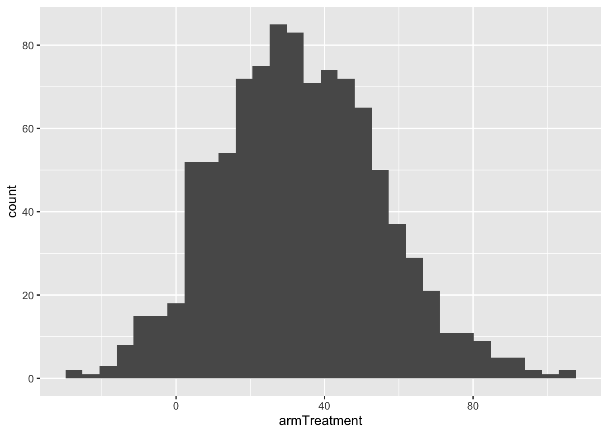

Topic 12 Bootstrapping
Learning Goals
- Explain the idea of the true population value for a quantity
- Describe the steps and assumptions of the bootstrapping procedure and how it estimates sampling variation
- Use bootstrap confidence intervals to answer research questions
Discussion
Research question: What is the causal effect of loud distractions on reaction times?
- More on the “causal” part next time.
- But for now, we will express “causal” as meaning: there is no influence of confounding variables.
- Is this true? (You’ll check in the exercises.)
original_model <- lm(rtime ~ arm, data = experiment)
summary(original_model)##
## Call:
## lm(formula = rtime ~ arm, data = experiment)
##
## Residuals:
## Min 1Q Median 3Q Max
## -117.09 -51.26 -2.09 37.74 324.91
##
## Coefficients:
## Estimate Std. Error t value Pr(>|t|)
## (Intercept) 318.26 13.35 23.843 <2e-16 ***
## armTreatment 32.83 20.72 1.585 0.119
## ---
## Signif. codes: 0 '***' 0.001 '**' 0.01 '*' 0.05 '.' 0.1 ' ' 1
##
## Residual standard error: 74.32 on 51 degrees of freedom
## Multiple R-squared: 0.04693, Adjusted R-squared: 0.02824
## F-statistic: 2.511 on 1 and 51 DF, p-value: 0.1192- On average, those in the Treatment group (loud distractions) had reaction times that were 32.83 milliseconds higher than those in the Control group.
- Is a difference of 32.83 ms a “real difference”?
What do we mean by “real difference”?
- We estimated this difference based on our class sample.
- This is why the
summary()output from R labels the columnEstimate.
- This is why the
- In reality, we care about understanding a general truth about the broader adult population.
- True population value: the value of the model coefficient that we would observe if we fit the model using the entire population of interest.
- Remember that model coefficients give us changes/comparisons of interest.
- “Real difference” means a meaningful difference in the broader population
- Maybe a meaningful difference is simply not zero.
- Maybe a meaningful difference is one that is of a certain magnitude or higher. e.g., at least 100 ms.
What is our best guess of the true population value?
- Our estimate itself! (Our estimate from our sample.)
- Hmm…but what if our sample was weird/peculiar somehow?
- Would most other samples have generated similar estimates?
- Another way of expressing this: how much do estimates vary from sample to sample?
- If a lot: many samples estimate a difference with the opposite sign as mine! Not reassuring!
- If not a lot: most samples at least agree on the sign of the difference. More reassuring that I got the sign of the true population value correct.
Bootstrapping to estimate sampling variation
- Can’t resample the population (easily), so let’s resample our sample!
- Goal: Only care about measuring variation in estimates from sample to sample.
- Think range, standard deviation as metrics
- Don’t care about the center of the estimates from sample to sample. (Because we’re resampling our sample, the center will essentially be equal to our original estimate.)
The bootstrapping procedure
- Step 1: Resample our sample a large number \(B\) (\(\approx\) 1000) times.
- The resamples must be of the same size as the original. (Increasing the sample size decreases the amount of sampling variation.)
- This resampling must be done with replacement. (Otherwise we’ll get the same resample every time.)
- Step 2: Fit the model of interest in each of the \(B\) resamples.
- Step 3: Obtain the coefficients of interest.
We now have \(B\) (1000) sets of coefficients.
# Resample the data and estimate the difference
set.seed(89)
resampled_coeffs <- replicate(1000, {
experiment_resampled <- experiment %>%
sample_n(size = nrow(experiment), replace = TRUE)
mod <- lm(rtime ~ arm, data = experiment_resampled)
coefficients(mod)
})
# Put the resampled coefficients into a dataset
bootstrap_data <- resampled_coeffs %>% t() %>% as.data.frame()
# What does bootstrap_data look like?
head(bootstrap_data)## (Intercept) armTreatment
## 1 324.0714 19.648571
## 2 318.7273 37.122727
## 3 327.3182 19.843109
## 4 314.7429 6.090476
## 5 313.8077 21.896011
## 6 331.3784 37.621622# Plot the distribution of the coefficient of interest
ggplot(bootstrap_data, aes(x = armTreatment)) +
geom_histogram()## `stat_bin()` using `bins = 30`. Pick better value with `binwidth`.
There are two main methods to quantify the amount of sampling variation.
Method 1: Use the middle 95% of these coefficients
# The $ pulls out the armTreatment variable
quantile(bootstrap_data$armTreatment, probs = c(0.025,0.975))## 2.5% 97.5%
## -7.614275 77.785810# The [["armTreatment"]] also pulls out the armTreatment variable
quantile(bootstrap_data[["armTreatment"]], probs = c(0.025,0.975))## 2.5% 97.5%
## -7.614275 77.785810- Middle 95% is the range from -7.6 to 77.8 ms.
- This is the 95% bootstrap confidence interval.
- This interval can be interpreted as a range of plausible values for the true population value (difference in reaction times: Treatment - Control).
- After all, it represents a range of estimates from “other samples”.
- A sample’s estimate is our best guess for the true population value.
- Do we have evidence for a real difference?
- What is our criteria for a real difference? Not zero?
- We do not have evidence for a real difference.
- Zero is a plausible value for the true population difference because it is in the interval.
- What is our criteria for a real difference? Not zero?
Suppose our 95% bootstrap confidence interval (CI) had been (90, 200)
- Criterion: a real difference is not zero
- We do have evidence for a real difference.
- Zero is not a plausible value for the true population value because it is not in the interval.
- Another criterion: a real difference is at least 100 ms.
- We do not have evidence for a real difference because it is plausible that the true difference in the broader population is a value less than 100 ms (e.g., 90, 91, 92 are all plausible because they are in the interval).
Method 2: If the 1000 coefficients follow a normal distribution…
- The middle 95% is given by: -2 SDs to +2 SDs
- SD = standard deviation of the 1000 coefficients.
# SD measures the spread of the coefficient estimates across samples
sd(bootstrap_data$armTreatment)## [1] 21.87694# It's quite close to the Standard Error (Std. Error)!
# Not a coincidence!
summary(original_model)##
## Call:
## lm(formula = rtime ~ arm, data = experiment)
##
## Residuals:
## Min 1Q Median 3Q Max
## -117.09 -51.26 -2.09 37.74 324.91
##
## Coefficients:
## Estimate Std. Error t value Pr(>|t|)
## (Intercept) 318.26 13.35 23.843 <2e-16 ***
## armTreatment 32.83 20.72 1.585 0.119
## ---
## Signif. codes: 0 '***' 0.001 '**' 0.01 '*' 0.05 '.' 0.1 ' ' 1
##
## Residual standard error: 74.32 on 51 degrees of freedom
## Multiple R-squared: 0.04693, Adjusted R-squared: 0.02824
## F-statistic: 2.511 on 1 and 51 DF, p-value: 0.1192Method 1 is the most general (preferred way). We’ll see Method 2 in another way later in the semester.
Bootstrapping FAQ
- Isn’t it a problem that we could sample the same case multiple times?
- e.g., Case 12 is sampled 3 times.
- This just means that Case 12 is representative of 3 people in this sample.
- What’s the magic number of resamples?
- 1000 will be good enough for us.
- Too little and we won’t get a good estimate of sampling variation.
- Too large and the process will take too long.
- Why the middle 95% instead of 100% (the full range)?
- Ideally, we want the histogram above to show every possible sample from the broader population – there are infinitely many of these!
- The full distribution (which is only approximated by the histogram) goes from \(-\infty\) to \(+\infty\)!
- The 100% range would tell us: a plausible set of values for the true population value is \((-\infty, +\infty)\).
- Not very useful!
Assumptions of bootstrapping (as described by the procedure above)
- We assume that our sample is representative of the broader population.
- We assume that our cases are independent.
- More precisely, we assume that our residuals are independent.
- Once we subtract off the “explainable part” of the response (leaving the residual), these errors (residuals) for different cases are not related to each other.
- Examples of violations of independence:
- Cases are repeated measurements for an individual. (e.g., health measurements at multiple time points)
- Cases share some spatial relatedness.
- Cases share some temporal relatedness.
- Want to know more? Take Correlated Data at Mac!
Exercises
A template RMarkdown document that you can start from is available here.
Data setup
library(readr)
library(ggplot2)
library(dplyr)
experiment <- read_csv("https://www.dropbox.com/s/cwhhr0vjibw64tx/experiment_spring_2020.csv?dl=1")
# Rename the variables
colnames(experiment) <- c("timestamp", "arm", "rtime", "vid_games", "sports", "drive", "hand")
# Clean up the "hand" variable labels
experiment <- experiment %>%
mutate(
hand = case_when(
hand=="Right-handed" ~ "Right",
hand=="Left-handed" ~ "Left"
)
)Exercise 1
Could being a video gamer, athlete, or regular driver confound the relationship between treatment and reaction time? Make plots to justify.
If we had performed this experiment in a much larger sample, would you expect these variables to be confounders? Explain. (Note: we’ll revisit the study design aspect (randomized experiment) in more detail next class.)
Based on your investigations, fit a model that will allow you to estimate the isolated (causal) effect of loud distractions on reaction times.
Obtain a 95% bootstrap confidence interval for this isolated (causal) effect. In order to ensure that your bootstrapping results don’t keep changing each time you run the code, put
set.seed(155)at the top of the code chunk where you perform bootstrapping. If you get an error about missing values, add, na.rm = TRUEto thequantile()function.What is the magnitude of a real, meaningful difference to you? Does your confidence interval provide evidence for a real difference? Briefly explain.
Exercise 2
Research question: Does the isolated (causal) effect of distractions differ among video gamers and non-gamers?
Answering this question involves a more complex model than we have seen before. Fit the model below, and first make sure that you understand how the R syntax
rtime ~ arm*vid_games + sportstranslates to the coefficients that result in the full model formula.mod_interact <- lm(rtime ~ arm*vid_games + sports, data = experiment) summary(mod_interact)Write the simpler model formulas for (1) non-gamers and (2) video gamers. Verify that these model formulas are multiple linear regression models. (Before, when our interaction models only included the two variables that were interacting, this process would give us simple linear regression models.)
Interpret the
armTreatmentcoefficient in the non-gamer and the gamer model formulas. Based on this, explain why thearmTreatment:vid_gamesYescoefficient answers this research question.Obtain a 95% bootstrap confidence interval for the
armTreatment:vid_gamesYescoefficient. (Useset.seed(155)again in your code chunk. If you get an error about missing values, add, na.rm = TRUEto thequantile()function.)What is the magnitude of a real, meaningful difference in the causal effect for you? Does your confidence interval provide evidence for a real difference? Briefly explain.